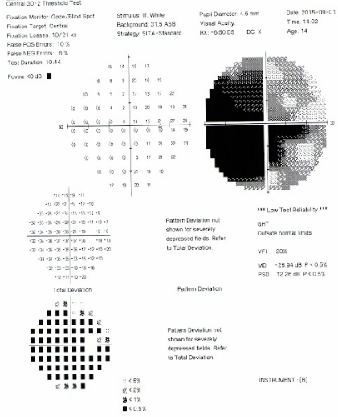
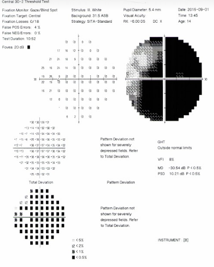
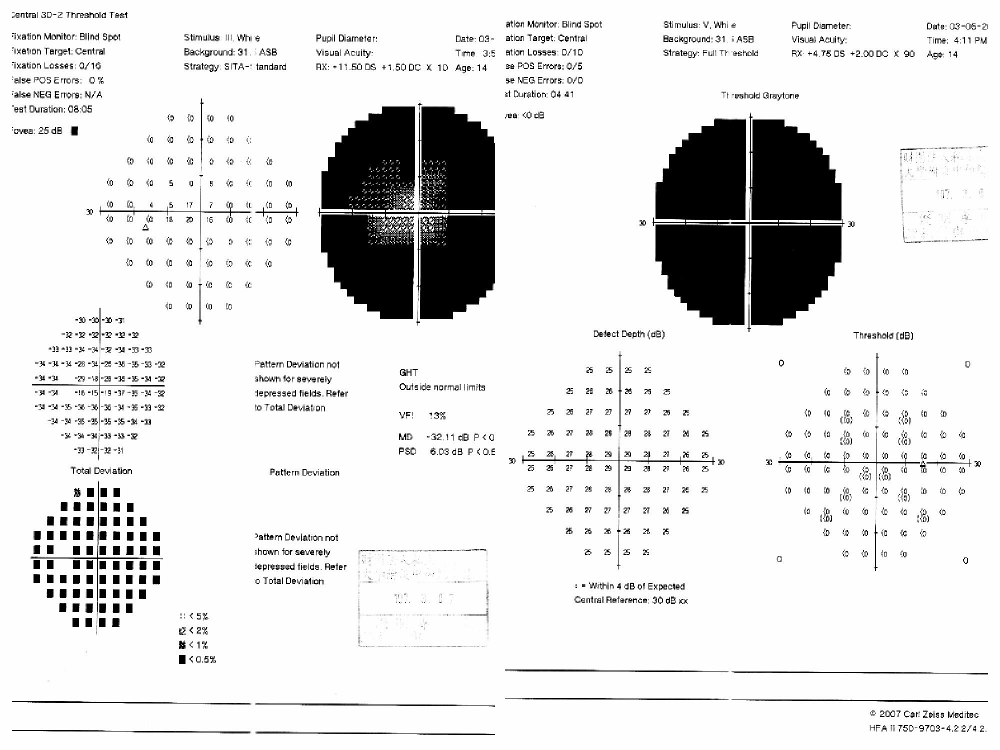
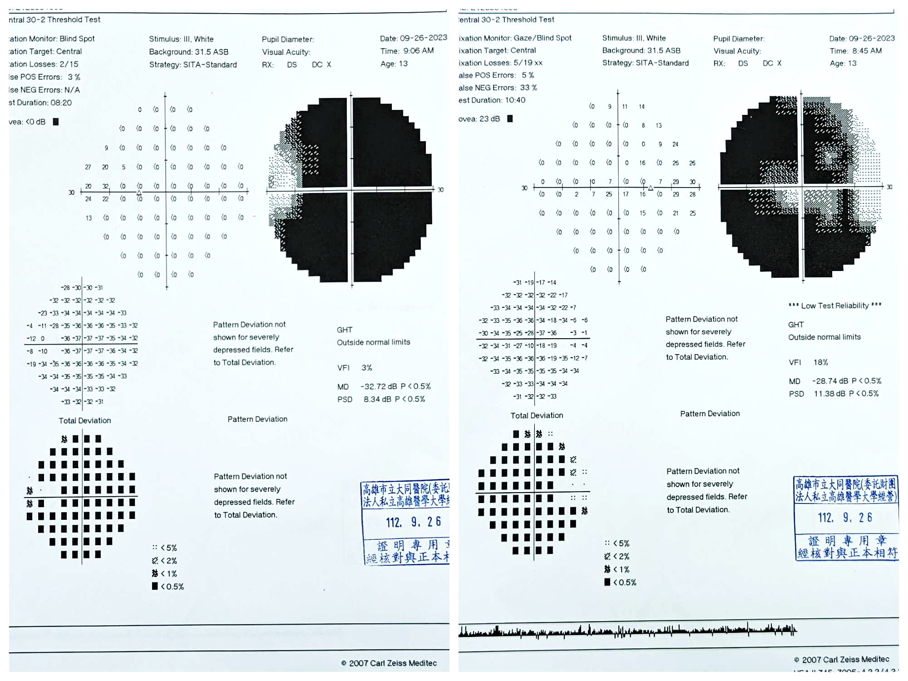

<section role="region" aria-label="視野圖示">
    <h2>視野圖</h2>
    <div class="img-grid-3">
        <figure>
            
            <figcaption>視野缺損類型</figcaption>
        </figure>
        <figure>
            
            <figcaption>正常視野</figcaption>
        </figure>
        <figure>
            
            <figcaption>偏盲（hemianopia）</figcaption>
        </figure>
    </div>
    <div class="img-full" style="margin-top:.4em">
        
        <p class="img-caption">視野對比度模擬</p>
    </div>
</section>
